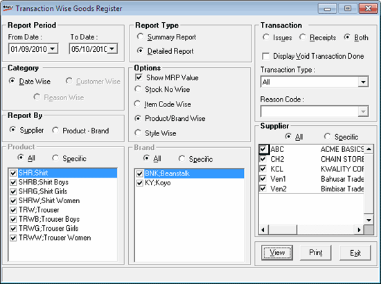

The Goods Register provides information on various transaction types such as purchase, transfer, approval, stock discrepancy and miscellaneous, for the selected period. Select a specific supplier so that the transactions pertaining only to that supplier are printed. The Item-wise detail report or abstract of the same can be generated.
How to reach: Reports > Stock Registers > Transaction-wise Goods Register
The Transaction Wise Goods Register window is displayed.

Report Period: By default, the From and To dates are the current Shoper date. You can enter any date range but the To date cannot be greater than the Shoper date.
Report Type: Select Summary Report or Detailed Report to specify the type of report to be generated. If you have selected Detailed Report, the sections Category and Options are enabled.
Category: Select Date Wise, Customer Wise or Reason Wise to identify the grouping in the report.
Options: Select Show MRP Value to include the MRP value in the report, if required. You can select any one of the four options available to generate the required type of report.
Select Stock No Wise to display the lines in the report as per stock number, Item Code Wise to display Class1, Class2, Subclass1, Subclass2, Size and Description (e.g., Product, Brand, Style, Shade, Size and Item Description) details of items, Product/Brand Wise (class1/class2) to display only the first two levels of item attributes or Style Wise (subclass1) to display the details as per subclass1 of items.
If the options Stock No Wise or Item Code Wise is selected, then the Category Customer Wise is enabled. If you select Product/Brand Wise, the section Report By is enabled.
Report By: Select Supplier or Product - Brand (class1 - class2) to identify the grouping to be done in the report. If you have selected Supplier, the group Supplier is enabled. In case you have selected Product - Brand, the groups Product and Brand are enabled.
Product: Select All or Specific. If you have chosen Specific, select the required product/s from the list.
Brand: Select All or Specific. If you have chosen Specific, select the required brand/s from the list.
Supplier: Select All or Specific. If you have chosen Specific, select the required supplier/s from the list.
Transaction: Select Issues, Receipts or Both to include the corresponding transactions in the report. Select Display Void Transaction Done to include the cancelled transactions in the report.
Transaction Type: Select the transaction type from the list. If you select All or Purchase, the field Reason Code will be disabled. If you select Transfer, Approval, Stock Discrepancy or Miscellaneous, the field Reason Code will be enabled.
Reason Code: Select the reason from the list.